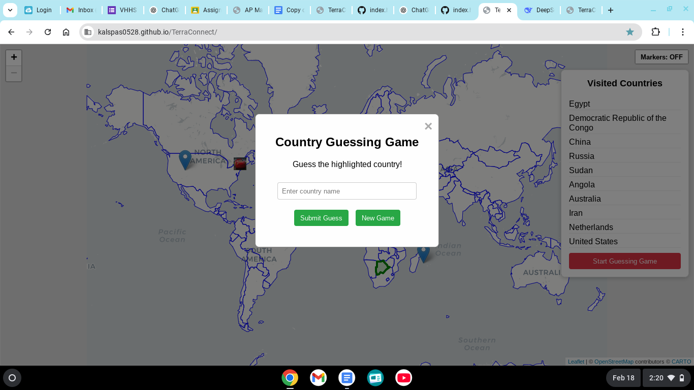

TerraConnect: Global Interactive News Map
TerraConnect is a browser-based educational and interactive platform that combines dynamic tools with an engaging world map. Powered by Leaflet.js and GNews API, it allows users to explore global news, compare countries, play geographic games, and more.
Feature Highlights
🌍 Interactive World Map
Built using Leaflet.js, users can click on any country to display a popup with a live Wikipedia summary. These popups also serve as launch points for other features like news feeds and the learn modal.

📰 Live News Integration
The GNews API was integrated to fetch real-time news headlines for any selected country. This feature brings a layer of dynamic relevance to geographical exploration.
🎮 Country Guessing Game & Local Storage
A fun, interactive guessing game challenges users to find countries on the map. Using localStorage, your visit history and guess accuracy are preserved for a personalized experience.
👶 Junior Explorer Mode
This kid-friendly mode simplifies the interface, removes potentially sensitive news content, and provides engaging educational country facts in a playful layout.

📘 Learn Feature
The Learn feature opens an educational modal with a mini map, fun facts, language info, flags, and cultural context—designed especially for deeper learning.
🌓 Dark/Light Mode Toggle
Accessibility was a priority, and a dark mode toggle ensures comfortable viewing for all users—especially in low-light conditions.
📌 Visited Countries Tracker
Each country you've explored is remembered and added to a list in the sidebar. With localStorage, this list persists across sessions.
🎬 Final Project Demo
This short video showcases the full TerraConnect experience—from interactive maps and news to learning features and games.
Challenges & Solutions
- News Integration: Choosing the right API was key. After testing several options including RSS and scraping, GNews provided the most stable results.
- Performance Optimization: Mobile responsiveness and map performance required Leaflet configuration tuning and lazy loading patterns.
- Junior Explorer Design: Creating a fully alternate mode for young users meant duplicating logic while avoiding code repetition—solved via modular design.
- Week 1: Project proposal, Figma wireframes, tech stack decision.
- Week 2: Leaflet.js prototype & basic map styling.
- Week 3: Wikipedia API integration & popup modal implementation.
- Week 4: Initial responsive design & mobile layout testing.
- Week 5: Map markers customization & UI refinements.
- Week 6: Country Guessing Game logic & localStorage tracking.
- Week 7: Side‑by‑side comparison tool via Rest Countries API.
- Week 8: Debounced search bar & advanced filtering.
- Week 9: RSS‑based news prototype & UI integration tests.
- Week 10: Comprehensive bug sweeps & error‑state handling.
- Week 11: Accessibility audit & ARIA label enhancements.
- Week 12: Cross‑browser video support & performance tuning.
- Week 13: User testing feedback & stretch‑feature tweaks. Added learn feature
- Week 14: Feature lock, news‑bug fixes, portfolio polish, Shark Tank pitch prep.
- Week 15: News feature troubleshooting, UI repairs, homepage bugfixing, and final stability improvements.
- Week 16: final UI fixes, added learn feature
- Week 17 & 18: Presented my final project!
GitHub Repository
For the complete codebase and project updates, visit the repository: TerraConnect on GitHub.